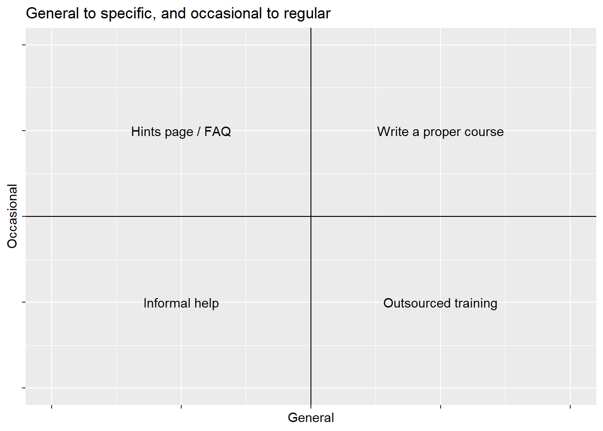

Leading a (training) session
skills
training
career progression
appraisal
A big laugh
(this remains a useful and thoughtful point, and it’s a bit of mystery why Donald Rumsfeld was so widely mocked for making it)
A big point
- this entire session presumes that you’ve got a good reason to put together some training
- understanding training needs is hard
- individual and group needs often don’t align
- most of us don’t go round knowing we have well-formed training needs
- time is short and demands are many
- most of us don’t have any formal expertise in assessing training needs
- institutional training mechanisms usually don’t reach individual teams
Intro
Training isn’t status-y
- informal training is common in this sector
- but hard, thankless, time-consuming etc
- who had training delivery in their appraisal?
- this session = quick tips and dirty tricks for leading sessions
- this session ≠ how to be a proper educator, TED talker, or other species of charismatic
- e.g. we won’t talk about styles of learning or anything like that
A worry about individualised training
- most of this assumes that training is individual
- but the objective of most training is team performance
- there’s a complicated relationship between those things
- the individualised model can reward training activities that don’t help team performance
- PDPs aren’t easy to connect to service needs
Outline
- Intro
- General considerations
- n questions
- Actual strategies
- Wrap-up, hang-wringing, and references
General considerations
General considerations
- presentations are about optimizing over competing demands
- that’s hard
- we’ll start with some easy general rules
- and move on to some ways of balancing those demands
General rules
- as simple as possible - because asymmetry
- show, don’t tell - because hierarchy
- steal and share - because instability
The asymmetry of presenting
- by the time you get asked to present, you’re an expert
- experts worry about completely different things from beginners
- experts make bad assumptions about what an average person knows
- ← AKA the curse of knowledge
- you’re also (probably) going to spend more time preparing than presenting
- beware pedantry, minor details, and fine print
The hierarchy
- like it or not, some of what you say will be more important than other parts
- like it or not, it’s your job to decide what’s most important
- like it or not, if everything is important then nothing is
The instability of facts

The instability of facts
- refreshing statistics courses every x years
- refreshing philosophy courses every y years
- refreshing bioscience courses every z years
- polling for values of x, y, and z
- x = 5-10
- y = 5-7
- z = 2-3
- annual refresh for KIND materials
The instability of facts
- things change
- making sure training materials reflect change is hard
- but training materials are almost always shareable…
- your session on Excel might not be very different from someone else’s session on Excel
- bridge materials plus borrowed material might be a better combo than something written from scratch
General rules
- as simple as possible - because asymmetry
- show, don’t tell - because hierarchy
- steal and share - because instability . . .
- adapt your plans to your circumstances…
n questions
Some questions to help you make training decisions
- 3 groups of questions
- who are you training?
- what is the training like?
- what should happen?
Population
- supply or demand?
- formal or informal?
- homogeneous or heterogeneous population?
- 1:1 or group?
- durable or fragile?
Intervention
- specific or general?
- regular or occasional/one-off?
- sync or async?
- didactic or social?
Intervention
tibble::tibble(x = c(4, -4, -2, 2, -2, 2),
y = c(-4, 4, -2, 2, 2, -2),
name = c("", "", "Informal help", "Write a proper course", "Hints page / FAQ", "Outsourced training")) |>
quadgo("General", "Occasional", "General to specific, and occasional to regular")
Intervention
tibble::tibble(x = c(4, -4, -2, 2, -2, 2),
y = c(-4, 4, -2, 2, 2, -2),
name = c("", "", "Live training sessions (talky)", "Teams channel and clinic times", "Manual or SOP", "Live training sessions (practical)")) |>
quadgo("Synchronous", "Didactic", "Synchronous to asynchronous, and didactic to social")Outcomes
- bridge or foundations?
- knowledge or skills?
- practice/problem-based or theoretical?
- individual or group?
Actual strategies
Four general training needs
- have a clear, relevant, specific, idea
- be the help on hand
- try to bridge between work and training
- provide real relevant practice tasks
Borrow-and-gloss
helps with instability
- loads of great open-access training resources exist
- consider borrowing and adapting, rather than writing from scratch
- lots of the commercial training providers do this. Definitely better value to DIY
Bridge materials
helps with hiearchy and instability
- everyone’s work is different
- consider writing bridge materials = ways of connecting generic resources with particular contents
- e.g. replacing table names to match your SQL
- e.g. changing exercises to use more relevant data
- e.g. swapping sales-led applications for analysis-led ones
Post-it® planning
helps with asymmetry and hiearchy
- your overall topic should be neatly describable on a Post-it®
- your talk should break down into a small number of distinct sections
- each section should, likewise, be Post-it®-able + each subsection etc etc
- the trick is to get the lower level descriptions to align with the higher, all the way up
Bottom-up planning
helps when you don’t know where to start
- all training is just scaled-up 1:1 helping
- so if you’re stuck, start by helping someone
- work through with a volunteer and help them 1:1
- take notes - what are you doing, who are you helping, what can they do
- repeat, adding and taking away
The Saint-Exupéry principle
“Perfection is achieved, not when there is nothing more to add, but when there is nothing left to take away.”
Resources
- https://the-turing-way.netlify.app/collaboration/chairing
- Poynard, Thierry, Mona Munteanu, Vlad Ratziu, Yves Benhamou, Vincent Di Martino, Julien Taieb, and Pierre Opolon. 2002. “Truth Survival in Clinical Research: An Evidence-Based Requiem?” Annals of Internal Medicine 136 (12): 888. DOI: 10.7326/0003-4819-136-12-200206180-00010.